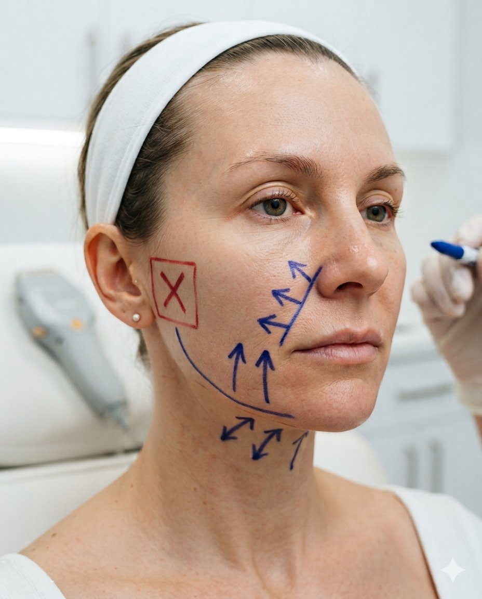
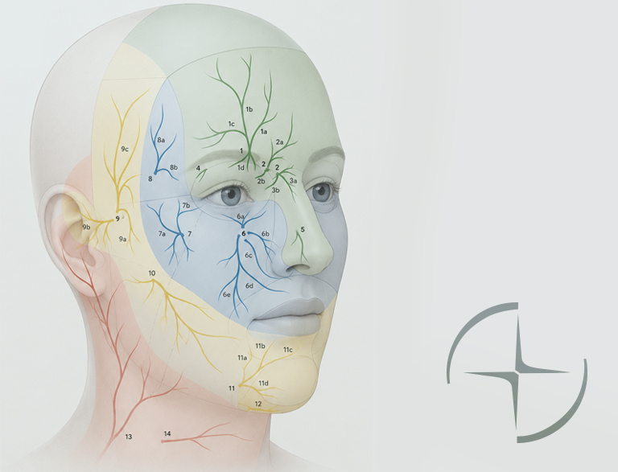

{{ label }}
디자인 없이 시작되는 시술에
실망하지 않으셨나요?
너무 아파서 피부과에 가기가
두려우신가요?
같은 팔자주름 시술을 받아도 결과가 다른 이유는 하나입니다. 꺼짐형 · 볼살형 · 처짐형, 팔자주름의 유형에 따라 맞춤형으로 디자인하지 않았기 때문입니다.1
같은 리쥬란을 받아도 통증이 다른 이유는 하나입니다. 연고 마취만 할 뿐, 신경 마취 · 냉각 마취 같은 디테일한 마취를 더하지 않았기 때문입니다.
1 강남역에서 가장 가시성 좋은 위치, 1층에서 바로 올라오는 단독 계단. 공간의 동선까지 설계의 일부로 봅니다.
01

의사 상담
실장 상담으로 끝나지 않습니다. 초진 기록과 3D 피부 진단 데이터를 확인한 뒤, 의사가 한 번 더 직접 상담합니다.
02

올디테일 디자인 시스템
시술 전, 무조건 펜으로 디자인합니다. 얼굴 · 바디별로 시술 효과를 극대화하는 올디테일만의 디자인을 활용합니다.
03

올디테일 마취 시스템
디테일한 마취 방법으로 통증을 최소화합니다. 피부과 방문이 통증으로 안 좋은 기억으로 남지 않도록 합니다.